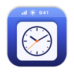

MenuWidgets
A world clock, weather, reminders, new mail and Claude usage in the macOS menu bar.
MenuWidgets is a small, open-source Mac app. It adds a few items to the menu bar, each opening a panel when clicked. It runs entirely on your Mac: there is no MenuWidgets server or account.
Source, install steps and settings: github.com/ianneub/mac-menu-widgets.
Gmail
The Mail widget can show how many unread emails are in your Gmail inbox, with each one's sender, subject and a short snippet, post a notification when one arrives, and move a conversation to the Trash when you click its trash can. MenuWidgets doesn't sign in to Google itself: it asks PIM Bridge, another app on your Mac that holds the Google sign-in, over a local connection that only a genuine copy of MenuWidgets is allowed to use.
See the privacy policy.